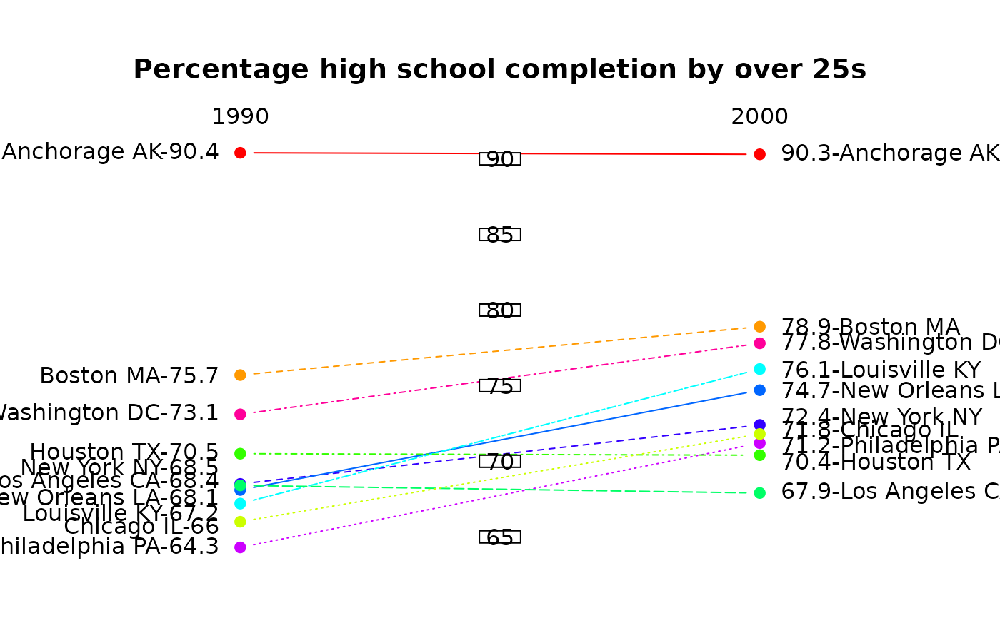

Display a "bumps" (sequential ranking) chart
bumpchart.RdDisplay a chart with two of more columns of points in order of ascending values with lines connecting the points in a row.
Arguments
- y
A numeric matrix or data frame which may contain NAs.
- top.labels
The strings that will appear at the top of each column of points on the plot.
- labels
The strings that will appear next to the outer columns of points.
- rank
Whether to rank the values in y before plotting.
- mar
The margins to use for the bumps chart. Alter to your taste.
- pch
The symbols to use when plotting the points.
- col
The colors to use.
- lty
The line types to use.
- lwd
The line widths to use.
- arrows
Whether to join the points with lines (FALSE) or arrows (TRUE).
- ...
Additional arguments passed to matplot or arrows.
Details
bumpchart calls matplot to plot the values in the transposed y matrix or data frame, joining the points with lines. At the left and right edges of the plot, the labels identifying each row of points are displayed. These labels may now be different for each side of the plot, for example if the values of y are to be included. Remember that due to the transposition of the values for plotting, the labels on the right have to precede those on the left - see the second example.
This type of plot is often used to show the changing positions of entities over time, like the ranking in surveys in different years. For a similar, but more flexible plot, see ladderplot.
Because of the way matplot plots the values, the order of everything is reversed. As the typical display of ranks is with rank 1 at the top, the actual rank positions are used to plot the values. This places the lowest scores at the bottom of the plot and the highest at the top.
Any arguments that are included in ... will be passed to matplot if the arrows argument is FALSE, and to the arrows function if the arrows argument is TRUE as in the first example.
Examples
# percentage of those over 25 years having completed high school
# in 10 cities in the USA in 1990 and 2000
educattn<-matrix(c(90.4,90.3,75.7,78.9,66,71.8,70.5,70.4,68.4,67.9,
67.2,76.1,68.1,74.7,68.5,72.4,64.3,71.2,73.1,77.8),ncol=2,byrow=TRUE)
rownames(educattn)<-c("Anchorage AK","Boston MA","Chicago IL",
"Houston TX","Los Angeles CA","Louisville KY","New Orleans LA",
"New York NY","Philadelphia PA","Washington DC")
colnames(educattn)<-c(1990,2000)
bumpchart(educattn,main="Rank for high school completion by over 25s",
arrows=TRUE,length=0.2)
vallab<-c(paste(educattn[,2],rownames(educattn),sep="-"),
paste(rownames(educattn),educattn[,1],sep="-"))
# now show the raw percentages and add central ticks
bumpchart(educattn,rank=FALSE,labels=vallab,
main="Percentage high school completion by over 25s",
lty=1:10,lwd=1,col=rainbow(10))
# margins have been reset, so use
par(xpd=TRUE)
boxed.labels(1.5,seq(65,90,by=5),seq(65,90,by=5))

par(xpd=FALSE)